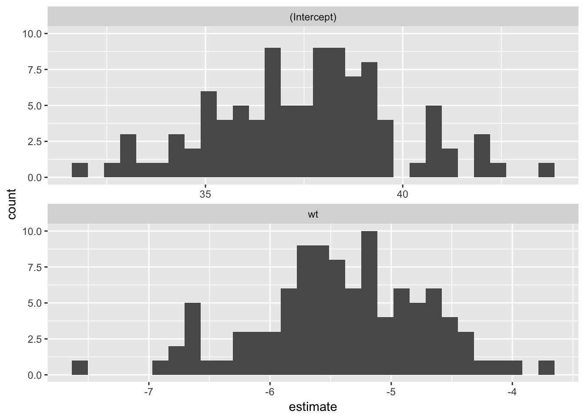
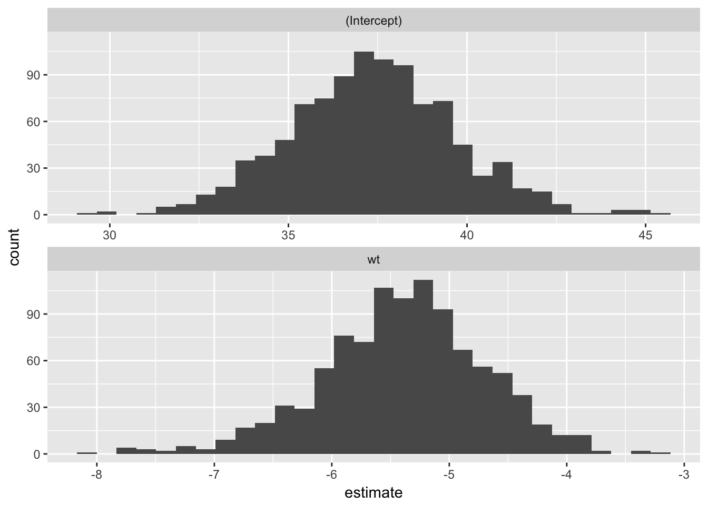

Computationally intensive methods such as cross-validation and bootstrapping can require drawing hundreds or thousands of samples. Computing these samples would be both time and space
The quosval package provides an alternative, with the lazy_sample object. The lazy_sample stores an unevaluated expression with the object to sample from and an the indexes, and lazily computes the sample from these when needed. The unevaluated expression is stored as a quosure.
First, load the packages that will be used below:
library("tidyverse")## Loading tidyverse: ggplot2
## Loading tidyverse: tibble
## Loading tidyverse: tidyr
## Loading tidyverse: readr
## Loading tidyverse: purrr
## Loading tidyverse: dplyr## Conflicts with tidy packages ----------------------------------------------## filter(): dplyr, stats
## lag(): dplyr, statslibrary("lazysample")The function lazy_sample creates a lazy sample object. Its arguments are a quosure or a one-sided formula, and the values of the index to extract.
smpl <- lazy_sample(mtcars, 1:5)
smpl## <lazy_sample>
## data: ~mtcars
## idx [5]: 1, 2, 3, 4, 5The indexes and the unevaulated expression are accessible as idx and quo, respectively.
smpl$idx## [1] 1 2 3 4 5smpl$quo## <quosure: global>
## ~mtcarsThe sample is accessible as sample,
smpl$sample## mpg cyl disp hp drat wt qsec vs am gear carb
## Mazda RX4 21.0 6 160 110 3.90 2.620 16.46 0 1 4 4
## Mazda RX4 Wag 21.0 6 160 110 3.90 2.875 17.02 0 1 4 4
## Datsun 710 22.8 4 108 93 3.85 2.320 18.61 1 1 4 1
## Hornet 4 Drive 21.4 6 258 110 3.08 3.215 19.44 1 0 3 1
## Hornet Sportabout 18.7 8 360 175 3.15 3.440 17.02 0 0 3 2Although $sample appears to be just another element in the reample object, it is an active binding and its value is re-computed everytime it is accessed.
The lazy_sample class is an R6 class. R6 classes are provided by the R6 packages and are a lighter-weight alternative to R’s reference class. The lazy_sample class was implemented as an R6 class because it supports active bindings.
The function, lazy_sample_lst, creates a list of lazy_sample objects:
lazy_sample_lst(mtcars, list(1:5, 5:10))## [[1]]
## <lazy_sample>
## data: ~mtcars
## idx [5]: 1, 2, 3, 4, 5
##
## [[2]]
## <lazy_sample>
## data: ~mtcars
## idx [6]: 5, 6, 7, 8, 9, 10To implement rsampling methods, such as bootstrapping and cross-validation, all that is needed are functions to generate the indexes.
For example a simple non-parametric bootstrap implement can be implemented as follows,
idx <- rerun(100, sample(nrow(mtcars), replace = TRUE))
samples <- lazy_sample_lst(mtcars, idx)The resamplr package already includes many common resampling algorithms. For example, the function bootstrap implements non-parametric the bootstrap above, along with options for weighing, Bayesian bootstrap, and subsampling.
models <- map(samples, ~ lm(mpg ~ wt, data = .$sample))
tidied <- map_df(models, broom::tidy)
ggplot(tidied, aes(x = estimate)) +
geom_histogram() +
facet_wrap(~ term, ncol = 1, scales = "free_x")
To implement rsampling methods, such as bootstrapping and cross-validation, all that is needed are functions to generate the indexes.
boot <- bootstrap(mtcars, R = 1000)
models <- map(boot$sample, ~ lm(mpg ~ wt, data = .$sample))
tidied <- map_df(models, broom::tidy)
ggplot(tidied, aes(x = estimate)) +
geom_histogram() +
facet_wrap(~ term, ncol = 1, scales = "free_x")
The function crossv_idx creates a data frame with lazy sample objects for the test and train splits in cross-validation.
idx <- seq_len(nrow(mtcars))
cv1 <- crossv_idx(mtcars,
train = map(idx, setdiff, x = idx),
test = as.list(idx))
cv1$train[[1]]## <lazy_sample>
## data: ~mtcars
## idx [31]: 2, 3, 4, 5, 6, 7, 8, 9, 10, 11, ...cv1$test[[1]] ## <lazy_sample>
## data: ~mtcars
## idx [1]: 1K-fold cross validation
crossv_kfold(mtcars, K = 5)## # A tibble: 5 x 2
## train test
## <list> <list>
## 1 <lazy_sample> <lazy_sample>
## 2 <lazy_sample> <lazy_sample>
## 3 <lazy_sample> <lazy_sample>
## 4 <lazy_sample> <lazy_sample>
## 5 <lazy_sample> <lazy_sample>crossv_kfold(mtcars, K = 10)## # A tibble: 10 x 2
## train test
## <list> <list>
## 1 <lazy_sample> <lazy_sample>
## 2 <lazy_sample> <lazy_sample>
## 3 <lazy_sample> <lazy_sample>
## 4 <lazy_sample> <lazy_sample>
## 5 <lazy_sample> <lazy_sample>
## 6 <lazy_sample> <lazy_sample>
## 7 <lazy_sample> <lazy_sample>
## 8 <lazy_sample> <lazy_sample>
## 9 <lazy_sample> <lazy_sample>
## 10 <lazy_sample> <lazy_sample>Leave-one-out and leave-p-out cross validation functions:
crossv_loo(mtcars)## # A tibble: 32 x 2
## train test
## <list> <list>
## 1 <lazy_sample> <lazy_sample>
## 2 <lazy_sample> <lazy_sample>
## 3 <lazy_sample> <lazy_sample>
## 4 <lazy_sample> <lazy_sample>
## 5 <lazy_sample> <lazy_sample>
## 6 <lazy_sample> <lazy_sample>
## 7 <lazy_sample> <lazy_sample>
## 8 <lazy_sample> <lazy_sample>
## 9 <lazy_sample> <lazy_sample>
## 10 <lazy_sample> <lazy_sample>
## # ... with 22 more rowscrossv_lpo(mtcars, p = 2)## # A tibble: 496 x 2
## train test
## <list> <list>
## 1 <lazy_sample> <lazy_sample>
## 2 <lazy_sample> <lazy_sample>
## 3 <lazy_sample> <lazy_sample>
## 4 <lazy_sample> <lazy_sample>
## 5 <lazy_sample> <lazy_sample>
## 6 <lazy_sample> <lazy_sample>
## 7 <lazy_sample> <lazy_sample>
## 8 <lazy_sample> <lazy_sample>
## 9 <lazy_sample> <lazy_sample>
## 10 <lazy_sample> <lazy_sample>
## # ... with 486 more rowscrossv_lpo_n(32, p = 3)## # A tibble: 4,960 x 2
## train test
## <list> <list>
## 1 <int [29]> <int [3]>
## 2 <int [29]> <int [3]>
## 3 <int [29]> <int [3]>
## 4 <int [29]> <int [3]>
## 5 <int [29]> <int [3]>
## 6 <int [29]> <int [3]>
## 7 <int [29]> <int [3]>
## 8 <int [29]> <int [3]>
## 9 <int [29]> <int [3]>
## 10 <int [29]> <int [3]>
## # ... with 4,950 more rowsMonte-carlo cross-validation. Cross-validation with 10 samples with 30% in the test test.
crossv_mc(~ mtcars, frac = 0.3, K = 10)## # A tibble: 10 x 2
## train test
## <list> <list>
## 1 <lazy_sample> <lazy_sample>
## 2 <lazy_sample> <lazy_sample>
## 3 <lazy_sample> <lazy_sample>
## 4 <lazy_sample> <lazy_sample>
## 5 <lazy_sample> <lazy_sample>
## 6 <lazy_sample> <lazy_sample>
## 7 <lazy_sample> <lazy_sample>
## 8 <lazy_sample> <lazy_sample>
## 9 <lazy_sample> <lazy_sample>
## 10 <lazy_sample> <lazy_sample>Cross-validation with 10 samples with 5 observations in the test test.
crossv_mc(~ mtcars, n = 5, K = 10)## # A tibble: 10 x 2
## train test
## <list> <list>
## 1 <lazy_sample> <lazy_sample>
## 2 <lazy_sample> <lazy_sample>
## 3 <lazy_sample> <lazy_sample>
## 4 <lazy_sample> <lazy_sample>
## 5 <lazy_sample> <lazy_sample>
## 6 <lazy_sample> <lazy_sample>
## 7 <lazy_sample> <lazy_sample>
## 8 <lazy_sample> <lazy_sample>
## 9 <lazy_sample> <lazy_sample>
## 10 <lazy_sample> <lazy_sample>The modelr package introduced the idea of “lazy” resampling and storing the results in “tidy” data frames. The resample objects in that package are a list with data and idx elements. It relies on R’s copy-on-modidy semantics to not copy the data element.
The recommended boot package is the standard R implementation of bootstrapping methods. The machine learning packages caret and rmlr implement several cross-validation and bootstrapping methods.